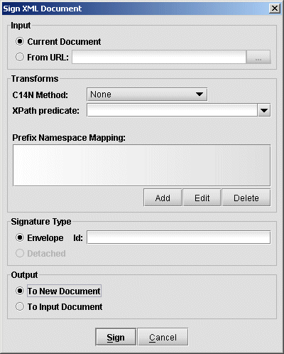

It is possible to create and verify a digital signature in Exchanger XML Editor according to the XML Digital Signature specification.
Open the file input/full.xml in the Envelope XML Signature project. To create a signature for this document, select Security->Sign Document... and the following dialog will appear.
Figure 2. Sign Document
Ensure that Current Document is selected as Input and in the Transforms section of the dialog, leave the C14N Method with its default setting (None) and leave the XPath field blank for now. Make sure that the output is set To New Document so as to not overwrite the existing file and then press Sign. A new document will open, consisting of the original document and a new Signature element made up of:
A SignedInfo element with details of how the signature was generated.
A SignatureValue element.
A KeyInfo element with details of the key used. In this instance, the document was signed using a key that is shipped with the Exchanger XML Editor as can be seen in the SubjectName element: <ds:X509SubjectName>CN=Exchanger,OU=Development,O=Cladonia,C=IE</ds:X509SubjectName>
To verify that the signature is correct, just select Security->Verify Signature and a dialog should popup to say that the signature is valid. Now change the data in the new document (for example, change the second person's name from Jane Smith to Jane Jones) and verify the signature again. This time you will be notified that the signature is no longer valid.
Instead of signing an entire document, it is sometimes desirable to sign a particular subsection, for example, a manager may wish to sign the part of an employee's purchase order that deals with approval. One way to do this is using an ID attribute on the element that should be signed. Open the file input/id.xml in the Envelope XML Signature project - notice that this document is the same as in the preceding example, except now each Person element has an extra "id" attribute. Select Security->Sign Document... but this time enter the value 123 in the Id section of the Signature Type field in order to sign the first Person element in the document (containing the details of John Doe). Again, select To New Document for the output so as not to modify the original file and press Sign. In the new document, modify the second Person element, changing the name from Jane Smith to Jane Jones and select Security->Verify Signature. The signature is still reported as valid even though the overall document has been changed. Now modify the first Person element, changing the name from John Doe to Tom Doe and again select Security->Verify Signature. This time the signature is invalid because the element to which it relates has been changed. Notice in the SignedInfo section that the <ds:Reference URI="#123"> element identifies which element has been signed. By default, when a schema/DTD is not present, only attributes named "id", "ID" and "Id" can be used for generating signtures in this way.
XPaths can also be used to specify what portion of a document is to be signed. Note that an XPath such as //section only identifies individual section nodes, whereas a construction similar to (//. | //@* | //namespace::*)[ancestor-or-self::section] is needed to describe the list of nodes in each section element (for more details, see the Canonicalization specification and the XML Signature specification). To create a signature based on an XPath, open the file input/xpath.xml in the Envelope XML Signature project and select Security->Sign Document.... Ensure that the Id field is blank and in the XPath field in the Transform section, enter ancestor-or-self::Salary - this predicate is used by the signature code to refine the path (//. | //@* | //namespace::*). Again, select To New Document for the output so as not to modify the original file and press Sign. Now modifying the Salary element will invalidate the signature while changes to the Name or SSN element will not.
In the preceding examples, we chose by default to create Envelope signatures, where the signature information is combined with the input data in a single file. It is also possible to create Detached signatures where the signature information lives in an entirely separate file from the input. Because the detached signature needs a URI for the file being signed, there is a slight restriction in Exchanger XML Editor that only files on disk can be signed using detached signatures (simply save any changes to an open document before creating a detached signature). Select Security->Sign Document... and set the input to From URL and select the desired XML file (for example, http://www.exchangerxml.com/Cladonia.gif). Set the Signature Type to Detached, set the appropriate XPath if required (the output is automatically set To New Document) and press Sign. The detached signature is displayed in a new window and can be saved to file for future use. (An example of a detached signature is available in the Detached XML Signature project in the signed folder.)
Note: Exchanger XML Editor does not currently support Enveloping signatures, the third type of signature defined in the XML Signature specification.
Any file can be signed, irrespective of whether it is XML or not, by specifying the URI and creating a detached signature with C14N Method set to None and not specifying an XPath transformation. Note that if an XML file is signed in this way, then no changes can be made to it (even non-significant whitespace changes) without invalidating the signature. Also, the URI of the input file is encoded in the detached signature so the file cannot be moved without invalidating the signature also. However, using a detached signature with extremely large XML files is sometimes the only possibility as the requirement to read the entire document into memory for a canonicalization or XPath transform can cause significant performance problems and with larger documents will cause out of memory errors (an expansion factor of between 4 and 10 is typical when building a DOM from an XML file on disk.)
The C14N Method drop down in the Transform section of the Sign Document... dialog specified which canonicalization method should be used. The choices are Inclusive Canonicalization removing comments, Inclusive Canonicalization preserving comments, Exclusive Canonicalization removing comments, Exclusive Canonicalization preserving comments and None. By default, the method is set to None. For more information on Canonicalization in general, see the earlier section.